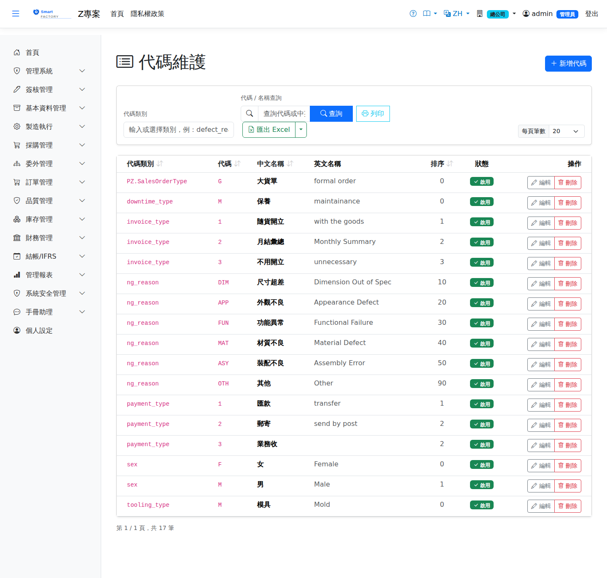

代碼維護Code Maintenance
代碼維護管理系統中的Code maintenance manages the system's 下拉選項drop-down options——那些出現在各主檔畫面、由公司自行定義的分類值，例如收款方式、客戶等級、庫存模式、產銷模式、模治具種類、特殊日類型、儲位類型。每一筆代碼由 — the classification values that appear on master-data screens and are defined by each company: payment type, customer grade, stock mode, planning mode, tooling type, special-day type and storage-location type. Each entry is identified by its 類別 + 代碼category plus code識別。.

欄位說明Field reference
| 欄位名稱Field | 必填Required | 說明Guide |
|---|---|---|
| 類別Category | 必填Required | 決定這個代碼出現在哪個下拉選單（見下方對照表）。Decides which drop-down the code appears in (see the table below). 建立後不可修改It cannot be changed once created，編輯時為唯讀。, and is read-only when editing. |
| 代碼Code | 必填Required | 同一類別下唯一，實際存進資料的就是這個值。Unique within the category; this is the value actually stored on the data. 建立後不可修改It cannot be changed once created。. |
| 中文名稱Name (ZH) | 必填Required | 中文介面的下拉選單顯示文字。The text shown in the drop-down in the Chinese interface. |
| 英文名稱Name (EN) | 英文介面的顯示文字。The text shown in the English interface. | |
| 排序Sort order | 下拉選單中的排列順序，數字小的在前。The order within the drop-down; smaller numbers first. | |
| 備註Remark | 內部說明，不顯示於下拉選單。An internal note; it is not shown in the drop-down. | |
| 啟用Active | 取消勾選後，這個代碼不再出現於新資料的下拉選單，但既有資料仍保留該值。Unticked, the code no longer appears in the drop-down for new records, while existing records keep the value. |
類別對照（基本資料主檔）What each category feeds (master data)
下表是基本資料主檔會用到的類別。The table below covers the categories used by the master-data screens. 系統中的類別不只這些There are more categories than these——其他模組另有自己的類別（例如不良原因 ng_reason、停機類型 downtime_type、訂單型態 PZ.SalesOrderType）。以畫面上「代碼類別」下拉列出的內容為準。: other modules bring their own, such as ng_reason for defect reasons, downtime_type for downtime types and PZ.SalesOrderType for order types. What the "Category" drop-down on screen lists is the authority.
| 類別Category | 用在哪個畫面的哪個欄位Which field on which screen it feeds |
|---|---|
payment_type | 公司/廠商主檔 — 收款方式Company / Vendor Master — payment type |
abc_grade | 公司/廠商主檔 — 客戶等級Company / Vendor Master — customer grade |
stock_mode | 產品主檔 — 庫存模式Product Master — stock mode |
mrp_mode | 產品主檔 — 產銷模式Product Master — planning mode |
tooling_type | 模具主檔 — 種類Tooling Master — type |
special_day_type | 特殊日 — 類型Special Day — day type |
location_type | 倉庫（儲位）— 儲位類型Warehouse (storage location) — location type |
操作步驟Steps
新增一個下拉選項Adding a drop-down option
簽核流程Approval flow
若管理員已在If an administrator has switched on approval for the 作業類型簽核設定Document Approval Settings中為「代碼維護」開啟簽核，本畫面的新增與修改都會走簽核： of "Code Maintenance", both adding and changing go through approval here:
| 動作What you do | 結果What happens |
|---|---|
| 新增Add | 存檔後狀態為After saving the status is 待審核pending approval，且 and the code is 自動設為停用set to inactive，核准後才生效並出現在下拉選單。; it only takes effect and appears in the drop-down after approval. |
| 修改Change | 需It has to be 重新送審submitted again，送審期間同樣停用。因此改一個已在使用中的代碼，會讓它暫時從下拉選單中消失。, and stays inactive while it is pending. Changing a code already in use therefore makes it disappear from the drop-down for a while. |
| 審核中的代碼A code under approval | 不可編輯、不可刪除，須待簽核完成或撤回。Cannot be edited or deleted until the approval finishes or is withdrawn. |
| 未設定簽核No approval configured | 存檔即生效，「啟用」由您自行控制。It takes effect on save, and you control "Active" yourself. |
刪除代碼Deleting a code
系統會檢查這個代碼是否The system checks whether the code is 已被實際資料使用used by actual data，例如「被公司（收款方式）使用中」「被產品（庫存模式）使用中」「被儲位（類型）使用中」，只要有任何一筆在用就擋下刪除並指出是誰在用。正在審核中的代碼同樣不可刪。 — for example "in use by a company (payment type)", "in use by a product (stock mode)" or "in use by a storage location (type)". If any record uses it, the deletion is blocked and the message says who is using it. A code under approval cannot be deleted either.
匯出Export
查詢結果可匯出 Excel（.xlsx）、CSV 或 JSON，內容為類別、代碼、中英文名稱、排序與啟用狀態。The results can be exported as Excel (.xlsx), CSV or JSON, containing the category, code, Chinese and English names, sort order and active status.